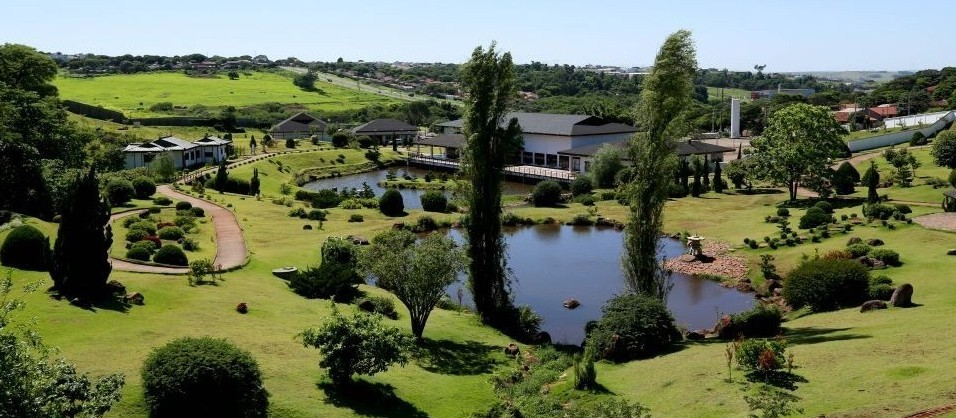

| Home |

Foto Parque do Japão.
Aqueles que moram ou visitam o Paraná, na cidade de
Maringá existe um parque do Japão. Ele ocupa uma área
de 100.000m² e se localiza no Parque Industrial na Rua Tulipa.
O parque do Japão em Maringá é um verdadeiro símbolo da
cultura japonesa no Brasil. Parece ser um ponto de turístico
de destaque com uma alta procura na internet. Nesse artigo
vamos conhecer alguns detalhes sobre esse Parque do Japão em Maringá.
O parque reflete a forte influência dos imigrantes japoneses
na região. Nele você encontra diversas formas de expressão
significativas e milenares da cultura japonesa. O parque do
Japão em Maringá apresenta desde coisas artísticas, culturais
e ambientais. Aqui você encontra ginásios de esporte, sala de eventos,
teatros e até mesmo uma tradicional casa de chá! Além de um belo jardim imperial de 46.000m²
O parque surgiu com um acordo de irmandade entre Maringá e a
cidade de Kakogawa no Japão. O acordo foi assinado em
2 de julho de 1973, possibilitando a troca de informações
sócio-culturais e econômicas para o desenvolvimento das duas cidades.
O Parque do Japão de Maringá foi inaugurado em 2014, seu projeto
“Parque do Japão Memorial Imin 100” surgiu em 2006 com a finalidade
de homenagear todos os imigrantes que se estabeleceram em Maringá,
em especial os japoneses que, no ano de 2008 completou 100 anos
de Brasil. O projeto foi elaborado em 2005 e teve a gestão do
Prefeito Sílvio Magalhães Barros II. Logo ele recebeu ajuda
do prefeito de Kakogawa, Shoichi Tarumoto que reuniu uma equipe para o trabalho.
O local escolhido para abrigar o parque japonês, foi uma área
de preservação permanente (APP), com uma nascente e um córrego.
Houve muitos conflitos e dificuldades no local, já que alguns
jogavam lixo industrial e havia um ponto de drogas e marginais.
O parque levou 10 anos de preparação e tem potencial para ser
o maior parque temático sobre o Japão no Brasil e até da América Latina.
O parque é lindo e muito bem cuidado. Alguns se sentem
até mesmo no Japão! O Parque possui marcos da imigração
japonesa no Brasil, como o monumento da imigração japonesa, os bonsais e as carpas.
Este Parque é em homenagem aos imigrantes japoneses que
colonizaram a região. Tem um grande monumento na entrada
em homenagem a imigração japonesa. Existem quiosques e
restaurantes no local. O lago com carpas japonesas é indescritível.
Você pode comprar rações para alimentar os peixes. Há cerejeiras
que ficam floridas (em sua época), já no inverno e no natal o
parque fica iluminado. O local é ótimo para caminhar
e tirar fotos, lembre-se da água e protetor solar.